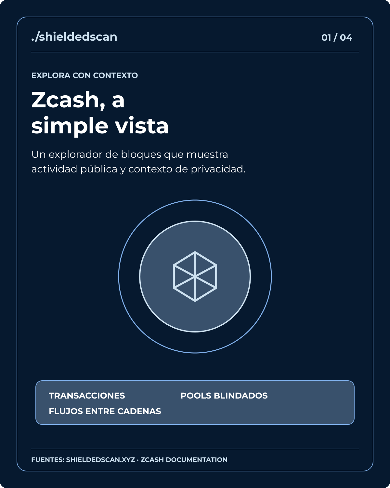
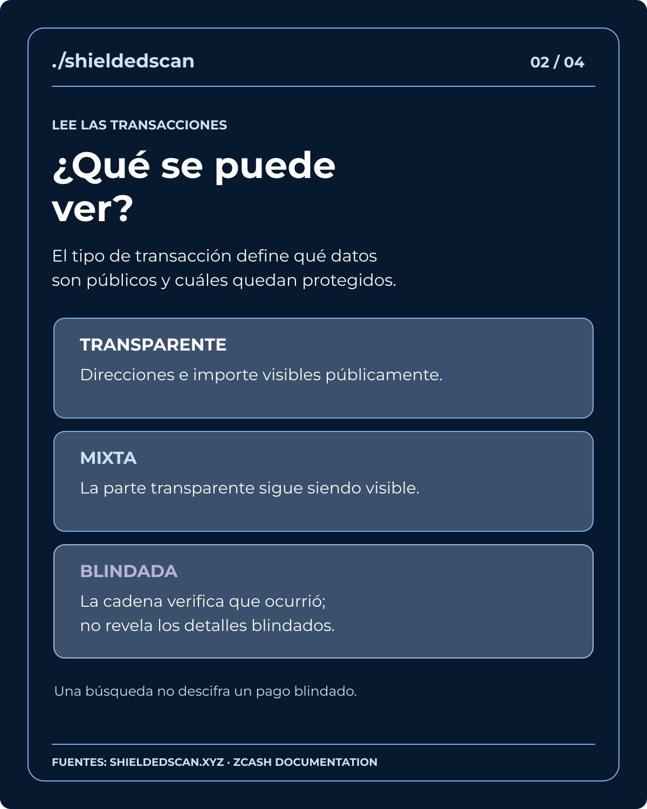
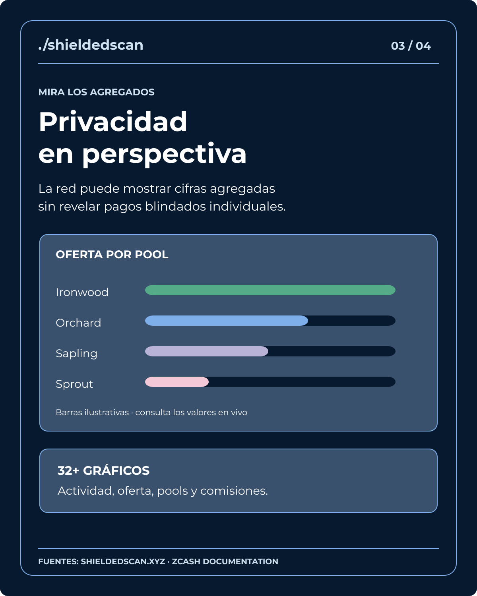
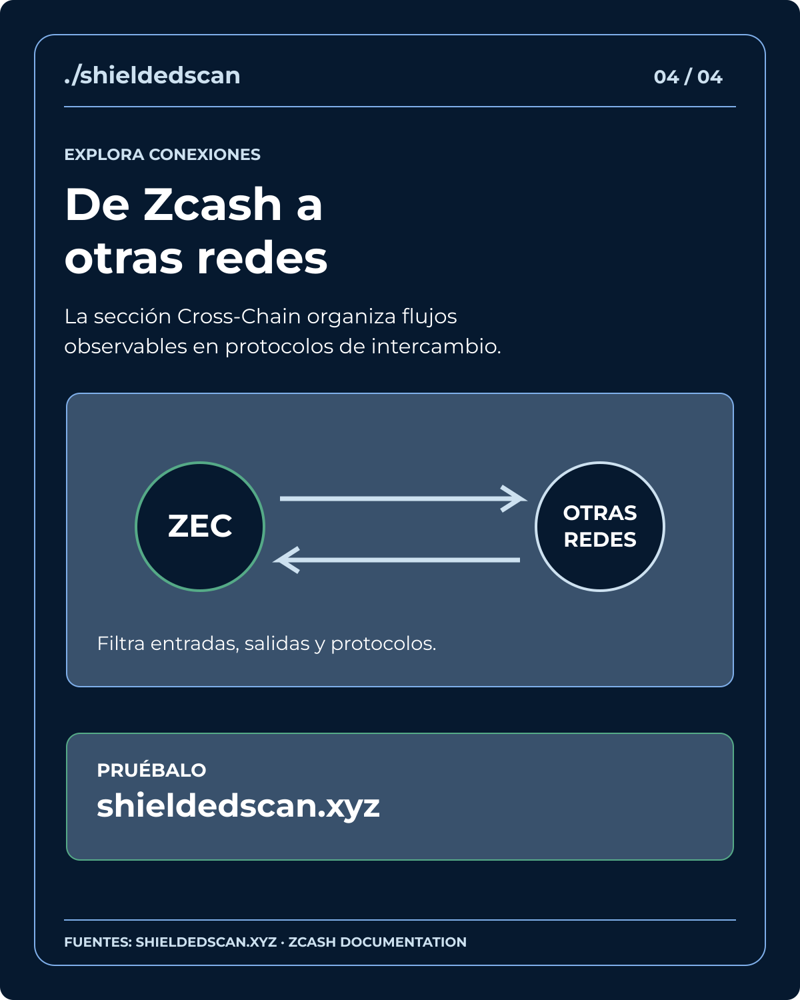

Muestra independiente · cuatro láminas
Zcash, a simple vista
Una serie visual en español sobre las funciones públicas de ShieldedScan: transacciones, pools blindados, gráficos y flujos entre cadenas.
Propuesta de diseño para una convocatoria de ZEC Bounties. Esta página no es oficial de ShieldedScan ni de ZecHub. La convocatoria todavía requiere solicitud, asignación y revisión; ninguna recompensa está garantizada.



02 · Leer transacciones
Una explicación de la visibilidad de datos según el tipo de transacción.



03 · Ver agregados
Barras meramente ilustrativas: consulta las cifras actuales en la fuente.


